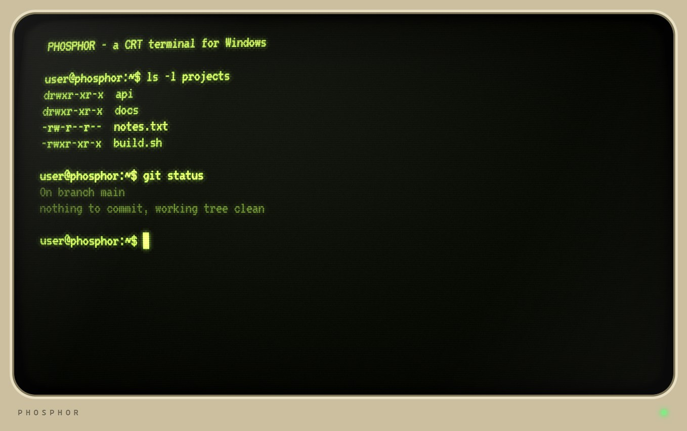
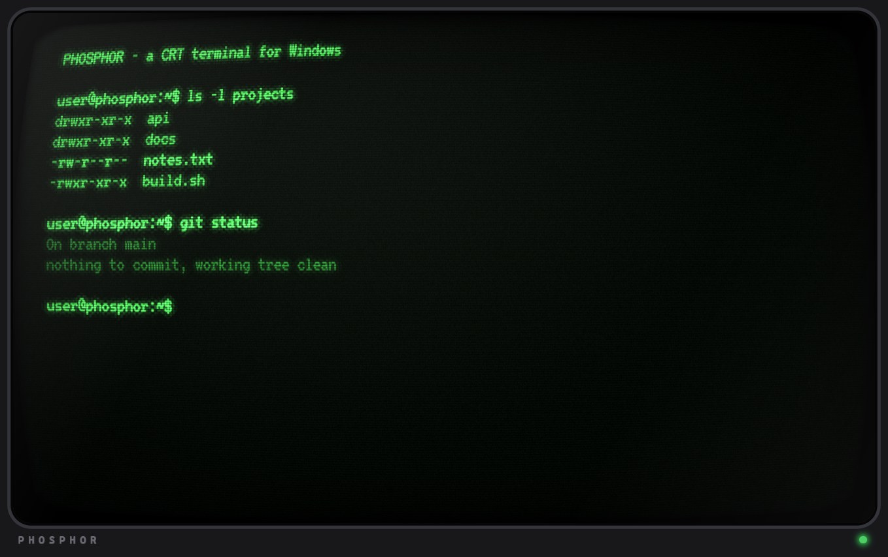
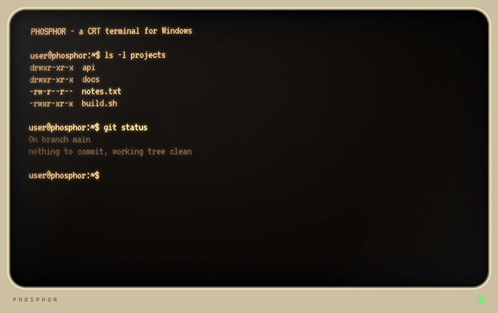
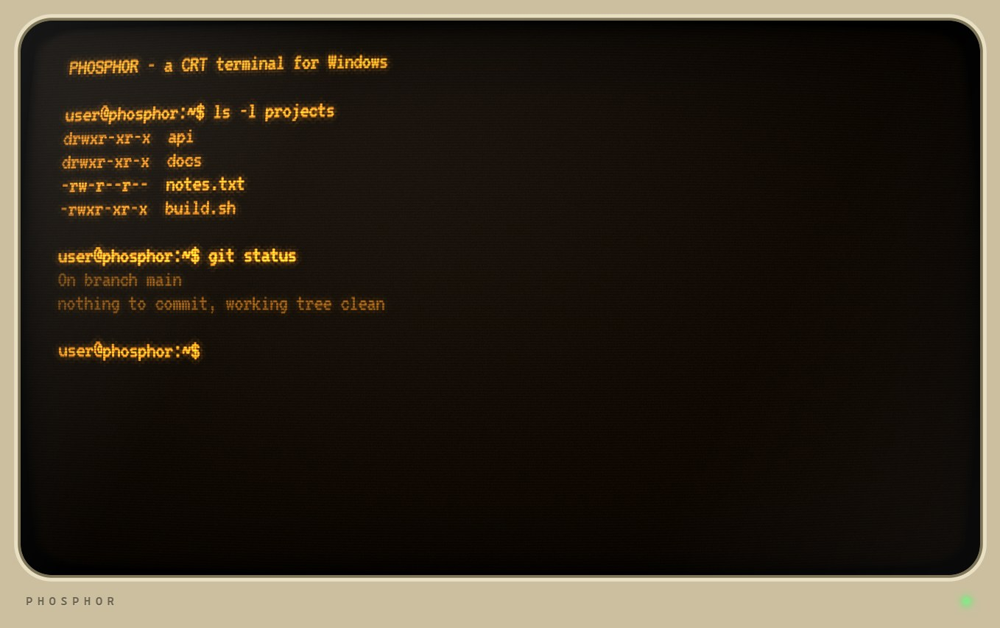
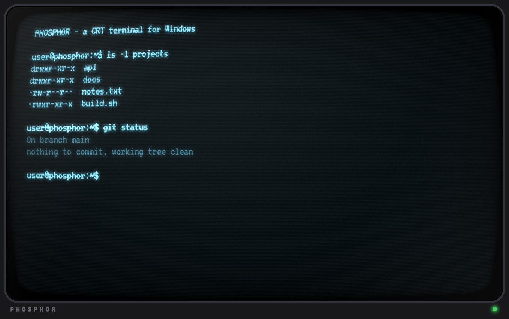
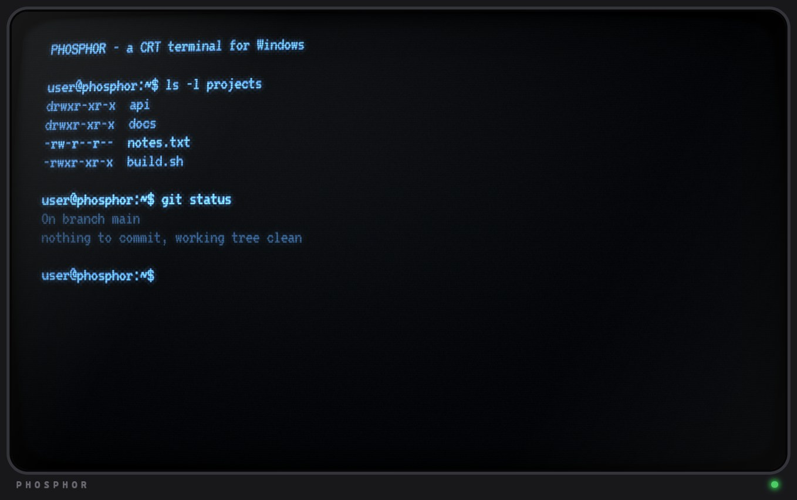
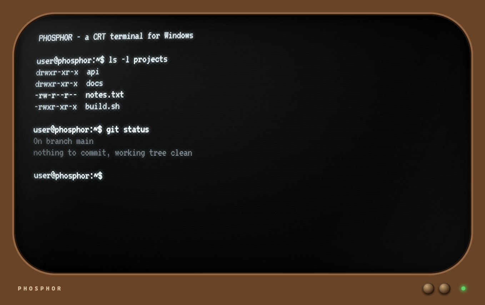
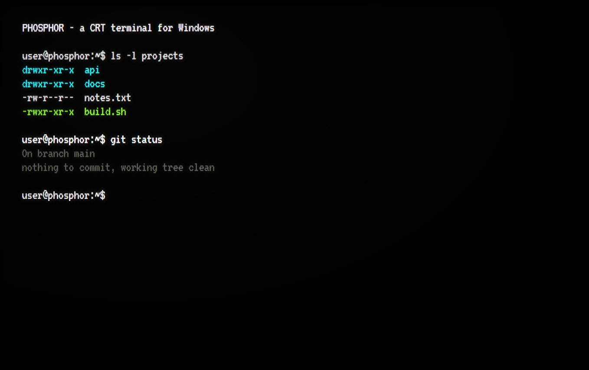

Simulated phosphor with persistence and burn-in, scanlines, tube curvature, ten skins and optional monitor frames. It runs PowerShell, or any command you give it, such as Claude Code. Free and open source (MIT). Fósforo simulado con persistencia y burn-in, scanlines, curvatura de tubo, diez skins y marcos de monitor opcionales. Corre PowerShell, o cualquier comando, como Claude Code. Gratis y de código abierto (MIT). Имитация люминофора с послесвечением и выгоранием, строчная развёртка, кривизна кинескопа, десять скинов и дополнительные рамки мониторов. Запускает PowerShell или любую команду, например Claude Code. Бесплатно и с открытым кодом (MIT).
xterm.js draws the terminal, ConPTY runs your shell, and a WebGL shader turns every frame into a glass tube.xterm.js dibuja la terminal, ConPTY ejecuta tu shell y un shader WebGL convierte cada cuadro en un tubo de vidrio.xterm.js рисует терминал, ConPTY запускает оболочку, а WebGL-шейдер превращает каждый кадр в стеклянную трубку.
Persistence (light fades slowly) and burn-in, a faint ghost of what stayed on screen.Persistencia (la luz se apaga de a poco) y burn-in, un fantasma tenue de lo que quedó en pantalla.Послесвечение (свет гаснет постепенно) и выгорание — слабый «призрак» того, что оставалось на экране.
Curvature, scanlines, aperture mask, vignette, flicker, rounded glass and a power-on animation.Curvatura, scanlines, máscara de apertura, viñeta, parpadeo, vidrio redondeado y animación de encendido.Кривизна, строчная развёртка, апертурная маска, виньетка, мерцание, скруглённое стекло и анимация включения.
Beige 80s, black or retro TV, drawn in CSS with a power LED. Optional.Beige de los 80, negro o TV retro, dibujados en CSS con un LED de encendido. Opcionales.Бежевая в стиле 80-х, чёрная или ретро-ТВ, нарисованы на CSS со светодиодом. По желанию.
BIOS-style boot text, key clicks, CRT hum and a power-on sweep, all synthesized. Optional.Texto de arranque estilo BIOS, clics de teclado, zumbido de CRT y barrido de encendido, todo sintetizado. Opcional.Загрузка в стиле BIOS, щелчки клавиш, гул ЭЛТ и звук включения — всё синтезируется. По желанию.
Throttle the output like a slow serial line, from 300 to 19200 baud. Long backlogs drain faster.Limitá la salida como una línea serie lenta, de 300 a 19200 baudios. Los atrasos largos se vacían más rápido.Ограничивайте вывод, как у медленной линии, от 300 до 19200 бод. Большие очереди выводятся быстрее.
Frame-rate cap, render quality, and it skips frames when nothing changes. Comfort mode removes flicker.Tope de cuadros, calidad de render, y saltea cuadros cuando nada cambia. El modo Comfort quita el parpadeo.Лимит кадров, качество рендера, пропуск кадров, когда ничего не меняется. Режим Comfort убирает мерцание.
Each skin sets the phosphor color and every effect. Switch with F10 or Alt+Shift+Left/Right.Cada skin define el color del fósforo y todos los efectos. Cambiá con F10 o Alt+Shift+Izquierda/Derecha.Каждый скин задаёт цвет люминофора и все эффекты. Переключение: F10 или Alt+Shift+Влево/Вправо.








Windows 10/11 and Node.js 18 or newer. There is no installer release yet: you run it from source, which takes four commands.Windows 10/11 y Node.js 18 o superior. Todavía no hay una release con instalador: se ejecuta desde el código, con cuatro comandos.Windows 10/11 и Node.js 18 или новее. Готового установщика пока нет: приложение запускается из исходников, это четыре команды.
git clone https://github.com/GabrielAmbrosio/phosphor.git cd phosphor npm install npm start
Use npm run claude to open Claude Code inside it, or npx electron . <command> for any other command.Usá npm run claude para abrir Claude Code adentro, o npx electron . <comando> para cualquier otro comando.Команда npm run claude открывает Claude Code внутри, а npx electron . <команда> — любую другую команду.
| KeyTeclaКлавиша | ActionAcciónДействие |
|---|---|
| F10 | Settings: skins, frame, sliders, sound, speedAjustes: skins, marco, sliders, sonido, velocidadНастройки: скины, рамка, ползунки, звук, скорость |
| F11 | FullscreenPantalla completaПолный экран |
| F12 | Save the screen as a PNGGuardar la pantalla como PNGСохранить экран как PNG |
| Alt+Shift+←/→ | Previous / next skinSkin anterior / siguienteПредыдущий / следующий скин |
Yes. It is MIT licensed. The VT323 font is under the SIL Open Font License.Sí. Tiene licencia MIT. La fuente VT323 usa la SIL Open Font License.Да. Лицензия MIT. Шрифт VT323 распространяется по SIL Open Font License.
Not yet. It uses Windows ConPTY and was only tested on Windows 11. A port is one of the things contributors can help with.Todavía no. Usa ConPTY de Windows y solo se probó en Windows 11. Un port es algo en lo que se puede colaborar.Пока нет. Используется ConPTY из Windows, тестировалось только на Windows 11. Порт — одна из задач, в которых можно помочь.
On the test machine, an idle terminal at the default 30 fps used about 520 MB across all Electron processes (about 270 MB of that is Electron itself), and a static skin draws almost nothing. Numbers vary by machine.En el equipo de prueba, una terminal quieta a los 30 fps por defecto usó cerca de 520 MB entre todos los procesos de Electron (unos 270 MB son de Electron), y una skin estática casi no dibuja. Los números varían según el equipo.На тестовом компьютере простаивающий терминал при 30 к/с по умолчанию занимал около 520 МБ во всех процессах Electron (около 270 МБ — сам Electron), а статичный скин почти ничего не рисует. Значения зависят от компьютера.
Yes. Every effect has a slider in the F10 panel, the Clean skin has almost none, and Comfort mode removes flicker, jitter and flashes.Sí. Cada efecto tiene un slider en el panel F10, la skin Clean casi no tiene ninguno, y el modo Comfort quita parpadeo, inestabilidad y destellos.Да. У каждого эффекта есть ползунок в панели F10, у скина Clean их почти нет, а режим Comfort убирает мерцание, дрожание и вспышки.
Try it on other GPUs and screens and report what breaks, add skins or frames, or help with tabs, an app icon, a tested installer and a macOS/Linux port. Open an issue or a pull request on GitHub.Probala en otras placas de video y pantallas y avisá qué se rompe, sumá skins o marcos, o ayudá con pestañas, un ícono, un instalador probado y un port a macOS/Linux. Abrí un issue o un pull request en GitHub.Попробуйте на других видеокартах и мониторах и сообщите, что сломалось, добавьте скины или рамки либо помогите с вкладками, значком, проверенным установщиком и портом на macOS/Linux. Создайте issue или pull request на GitHub.